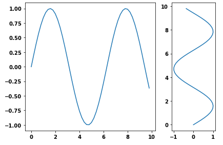
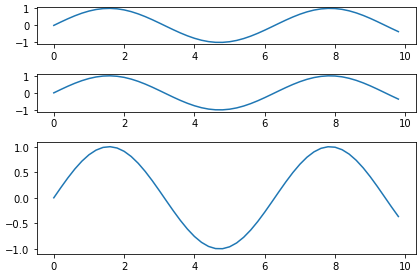
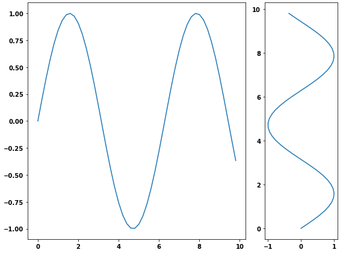

Matplotlib different size subplots
I need to add two subplots to a figure. One subplot needs to be about three
times as wide as the second (same height). I accomplished this using
GridSpec and the colspan argument but I would like to do this using
figure so I can save to PDF. I can adjust the first figure using the
figsize argument in the constructor, but how do I change the size of the
second plot?
Answer
- As of
matplotlib 3.6.0,width_ratiosandheight_ratioscan now be passed directly as keyword arguments toplt.subplotsandsubplot_mosaic, as per What's new in Matplotlib 3.6.0 (Sep 15, 2022).
f, (a0, a1) = plt.subplots(1, 2, width_ratios=[3, 1])
f, (a0, a1, a2) = plt.subplots(3, 1, height_ratios=[1, 1, 3])
-
Another way is to use the
subplotsfunction and pass the width ratio withgridspec_kw- matplotlib Tutorial: Customizing Figure Layouts Using GridSpec and Other Functions
-
matplotlib.gridspec.GridSpechas availablegridspect_kwoptions
import numpy as np import matplotlib.pyplot as plt
generate some data
x = np.arange(0, 10, 0.2) y = np.sin(x)
plot it
f, (a0, a1) = plt.subplots(1, 2, gridspec_kw={'width_ratios': [3, 1]}) a0.plot(x, y) a1.plot(y, x)
f.tight_layout() f.savefig('grid_figure.pdf')

-
Because the question is canonical, here is an example with vertical subplots.
plot it
f, (a0, a1, a2) = plt.subplots(3, 1, gridspec_kw={'height_ratios': [1, 1, 3]})
a0.plot(x, y) a1.plot(x, y) a2.plot(x, y)
f.tight_layout()

Suggest
You can use gridspec and figure:
import numpy as np import matplotlib.pyplot as plt from matplotlib import gridspec # generate some data x = np.arange(0, 10, 0.2) y = np.sin(x) # plot it fig = plt.figure(figsize=(8, 6)) gs = gridspec.GridSpec(1, 2, width_ratios=[3, 1]) ax0 = plt.subplot(gs[0]) ax0.plot(x, y) ax1 = plt.subplot(gs[1]) ax1.plot(y, x) plt.tight_layout() plt.savefig('grid_figure.pdf')
